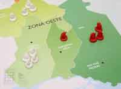
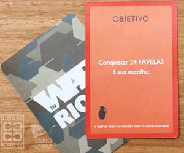

As regras são basicamente as mesmas do jogo de estratégia e guerra mundialmente consagrado. Aliás, nas palavras do autor, “as Regras do jogo se mantiveram inalteradas, e constituem os mesmos princípios morais comercializados em lojas infantis: matar, destruir, conquistar e aniquilar seus amigos”.
E ainda tem o prólogo, narrando como surgiu o cenário de guerra civil que atualmente vivemos no Rio, apesar dos governos estranhamente negarem:
Rio de Janeiro, dezembro de 2007.Gostei da idéia, assim que o projeto ficar pronto vou imprimir meu mapa e ajudar a destruir o Rio, ao invés de ficar só reclamando ;) Depois de décadas de abandono e desprezo por parte das autoridades, a cidade do Rio de Janeiro finalmente encontra-se em guerra. Enquanto os políticos discursam para uma classe média desinteressada, esquadrões de extermínio, grupos paramilitares, policiais e narcotraficantes disputam o controle da capital.
O cenário disfarça, mas a realidade não engana. Entrecortada por montanhas, florestas e lindas praias tropicais, o couro come nas ruas da cidade. Em alguma esquina do centro, na favela ou nas ruas do bairro, sorrateiramente o dinheiro troca de mão e a arma troca de lado.
os blindados tomam os guetos e os milicianos controlam o gás, o bacana aperta a mutuca e o vagabundo trabalha em paz. a piranha exerce tranqüila a mais antiga profissão, já deixou um galo pro cana, no esquema do cafetão. o bicheiro festeja o caixa no orçamento do carnaval, na cidade maravilhosa só não falta é cara de pau.
Nesse tabuleiro sem regras é preciso sorte.
As autoridades da segurança pública fluminense não gostaram, mas eu gostei e confesso que fiquei com inveja de não ter sido eu o autor da idéia. Talvez porque, na vida real, eu faça parte das peças do jogo, e não do jogador, afinal o jogador só tem a perder a vitória ou não da batalha... eu tenho a vida...
Enfim, acesse o blog do cara e veja como jogar a nova futura febre!